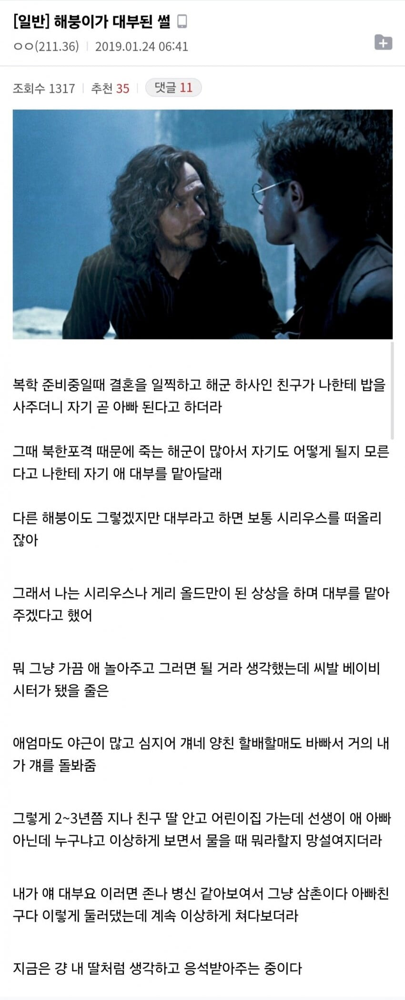

현실은 무급 베이비시터...

현실은 무급 베이비시터...
완전짱친인가보네
시리우스 블랙이면 포터 부부의 위치를 어둠의 군주에게 일러바친 오른팔이잖아
그거 피터 패티그루잖아
패티그루는 싸우다가 폭사한 영웅이야!!
그건 론이 가진 쥐색이 아님?
그 악당이 아즈카반에서 탈옥했다는 소식을 들었을 땐 정말이지 등골이 오싹했지! 지금은 죽었다니 얼마나 다행인지
대부한테 저렇게까진 안 시키는거 같던데...케바케인가 이것도
원래는 "나 일찍 가면 니가 자식처럼 키워줘"임
일찍 가는게 출근이었나 ㅋㅋㅋㅋㅋ
이거 해리포터 보고 대부하는거 같음
대부는 보통 교회나 성당다니는 사람이 간혹 꺼내는 말인데
대부해도 그냥 부모가 갑자기 다 돌아가면 대부가 대신
양아버지로써 키워주는 거임
그래서 대부되도 대부분은 별일 없음
마피아식 대부가 아니어서 다행인걸로...
최행배 대부는 최익현씨라
아임 히스 갓파더
이걸포기해?
현실 프린세스메이커네 무사수행 보내면 엄빠 정신이 번쩍 들듯
개붕아 품앗이라는 말을 모르니